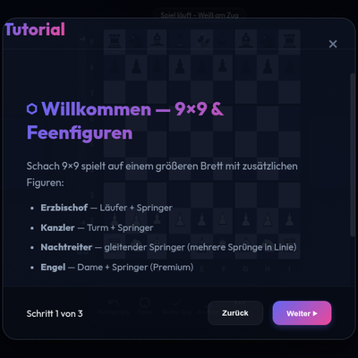
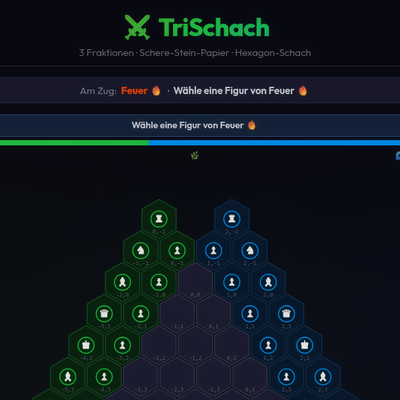

Schach9x9
9×9 Brett, Feenfiguren (Erzbischof, Kanzler, Engel), 5 KI-Persönlichkeiten, Engine-Analyse, Eröffnungs-Trainer, Kampagnen, 3D-Schlachtmodus.
Zwei einzigartige Schachvarianten auf einer Plattform — vom klassischen 9×9 Brett mit Feenfiguren bis zum strategischen 3-Spieler-Hex-Schach. Code & Entwicklung leben in den eigenständigen Repos.
Die aktive Entwicklung findet in den eigenständigen Projekten Schach9x9 und Trischach statt.
base3 vereint zwei Experimente an der Grenze dessen, was Schach sein kann — ohne sich zu vergrößern, ohne Multiplayer-Komplex, ohne Runterfahren auf Konvention. Das Eine ist tiefes, ruhiges Schach im 9×9 mit drei zusätzlichen Figuren. Das Andere ist ein Ringkampf auf sechseckigem Brett, in dem drei Fraktionen in Stein-Schere-Papier-Beziehungen stehen. Beide teilen nur einen Ursprung: Neugier auf Schach-Regeln, mehr Raum geben, ohne das Spiel zu zerstören.
9×9 Brett, Feenfiguren (Erzbischof, Kanzler, Engel), 5 KI-Persönlichkeiten, Engine-Analyse, Eröffnungs-Trainer, Kampagnen, 3D-Schlachtmodus.
3-Spieler-Hex-Schach, 3 Fraktionen (Feuer/Natur/Wasser), Stein-Schere-Papier-Kampf, Alpha-Beta, Auto-Battle-Turniere mit Elo, Replay-System (TSPN).

9×9 Brett mit Feenfiguren. Erzbischof, Kanzler & Engel.

3-Spieler Hexagonales Schach. Stein-Schere-Papier Kampfmechanik.
base3 ist eine statische Landing Page, die als Eintrittspunkt für zwei eigenständige Schach-Varianten dient — zwei Experimente an der Grenze dessen, was ein Schachspiel sein kann, ohne sich in einen Multiplayer-Komplex zu verrenken.
Beide Spiele sind als PWA im Browser spielbar. Die Live-Demos brauchen keine Installation:
base3 als Landing Page ist aktiv — sie wird gepflegt, wenn die Subprojekte Releases haben. Die Entwicklung findet jedoch in den eigenständigen Repos statt.
Schach9x9 ergänzt das 8×8-Schachbrett auf einem 9×9-Brett: Erzbischof (Läufer+Springer), Kanzler (Turm+Springer), Engel (Defensiv). Wer normales Schach kennt, findet sofort rein; die Tiefe kommt von den neuen Figuren.
Trischach ist 3-Spieler-Schach auf einem sechseckigen Brett. Drei Fraktionen — Feuer , Natur , Wasser — stehen in einem zyklischen Kampf: Feuer > Natur > Wasser > Feuer. Das Spiel ist eine permanente Neu-Berechnung von Allianzen und Risiken — nicht nur „wer schlägt wen", sondern „wer steht wie zueinander".
Nein — base3 ist eine statische Landing Page ohne Blog oder Newsletter. Änderungen und Releases werden ausschließlich über die GitHub-Repos kommuniziert (Changelog, Releases).
base3 selbst (das Verweis-Repo) benötigt keine Beiträge — außer bei Landing-Page-Aktualisierungen (Version-Pills, neue Releases).
base3 lässt sich über das Web-Manifest unter /base3/ auf den Home-Bildschirm legen. Ein Service Worker speichert die Seite beim ersten Besuch — danach ist sie auch offline erreichbar. Online immer frisch: network-first, der Cache ist nur der Offline-Fallback. Die Spiel-Demos (Schach9x9, Trischach) sind ebenfalls nach dem ersten Laden offline-fähig.